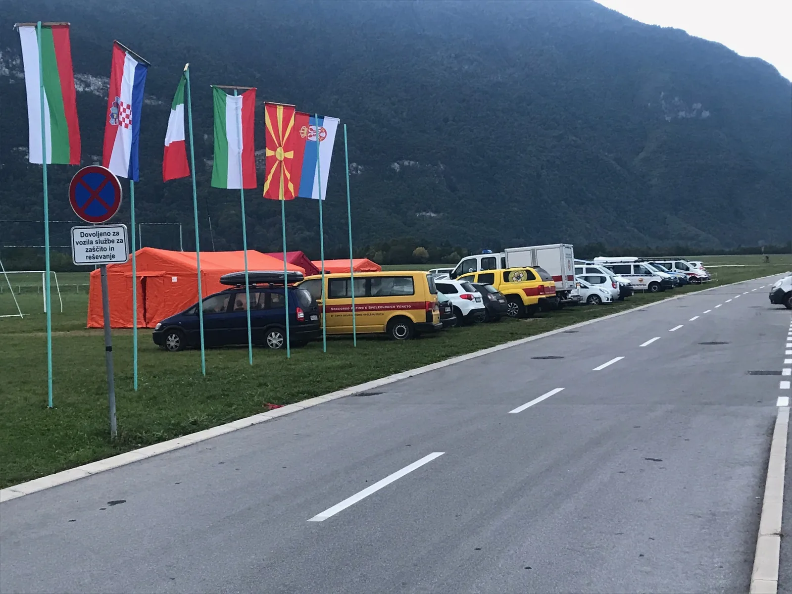

Međunarodna speleospasilačka vježba u Skalarjevom breznu
Na međunarodnoj vježbi speleospašavanja u organizaciji slovenske Jamarske reševalne službe sudjelovali su i dva člana našeg speleološkog odsjeka.

U razdoblju od 27.-30.9. se održala međunarodna vježba speleospašavanja u organizaciji slovenske Jamarske rešavalne službe (JRS) u suradnji sa slovenskom upravom za zaštitu i spašavanje (DUZS). Na vježbi su sudjelovala dva člana našeg odsjeka, Luka Havliček i Marko Rakovac. Cilj vježbe bilo je izvlačenje unesrećenog speleologa sa 900 m dubine iz objekta Skalarjevo Brezno koje se nalazi na slovenskoj strani masiva Kanin. Timove su sačinjavali spašavatelji iz Slovenije, Italije, Hrvatske, BiH, Bugarske, Srbije i Makedonije. Glavna baza vježbe bila je u mjestu Bovec, dok je dio logističke opreme i ljudstva bio smješten u planinarskom domu Petra Skalarja kao i u isturenom logoru na samom ulazu jame. Spašavatelji i oprema su transportirani skijaškom žičarom do vrha žičare a pješice do doma odnosno do ulaza u jamu.
Jama je iznimno interesantna u speleološkom kontekstu i predstavlja jedan od značajnijih i dubljih objekata tog dijela masiva u kojem su istraživanja započela 1980-tih. Jamarska zveza Slovenije (JZS) u suradnji sa JRS-om je, kako bi ponovno intezivirala istraživanja u jami, preopremila cijeli objekt do dna te je isti ostao opremljen za nastavak speleoloških istraživanja i ponavljanje detaljnijeg speleološkog nacrta. S obzirom da je odnedavno izvršen remont žičare u Bovcu odnosno zbog logističke prednosti, speleološka istraživanja na masivu Kanina se ponovno intenziviraju.
Tome u prilog govori činjenica da su samo na području Kanina u proteklih godinu dana „niknule“ dvije nove tisuće – P4 (Brezno rumenega Maka) i jama Huevos – Jarak – Macola. Također, vrlo blizu spoja su jama Hudi Vršić i Črnelsko Brezno, što će, u slučaju spoja, činiti sustav sa preko tisuću metara dubine. Potencijal Skalarjevog brezna je također velik jer bi spajanjem sa sistemom BC4-Mala Boka dubina sustava mogla iznositi 1960 m! Na kaninskoj visoravni, temperature zraka u jamama se kreću između 4°-6° C, te osim sušnih perioda ljeti, također su vrlo česta zimska istraživanja zbog stabilnijih uvjeta na površini. S obzirom da su velike vertikale u jamama izraziti kolektori oborinskih voda, zimi s jedne strane se smrzavanjem tla postiže veća sigurnost u podzemlju (izostanak padalina), dok s druge postoji povećana opasnost od lavina, zatrpavanja ulaza snijegom (npr. prokopavanje snježnih zapuha na ulazu jame, do 10 m!) i niskih temperatura na površini (trebamo u obzir uzeti da uz speleološku opremu moramo biti sposobni i za kretanje na snijegu pomoću turnoskijaške opreme, itd.)
Akcije speleospašavanja sa velikih dubina često traju više dana, te kao takve predstavljaju jedan od najkompleksnijih oblika spašavanja uopće. Razlog tome su velike dubine, nezahvalni meandri i ogromna količina opreme i ljudstva.
Da sažmemo, zbog prevencije nesreća odnosno u slučaju stvarne akcije, važno je da speleolozi budu:
- savjesni u guranju „osobnih“ granica u podzemlju,
- uključeni u rad gorske službe spašavanja te da
- pohađaju tečajeve o samospašavanju i seminare prve pomoći.